Jenkins-Traub算法
Jenkins-Traub算法
算法引入
Mathematica中的NSolve即是用此算法求根,该方法也是迭代算法,比牛顿迭代法要快.关于这一方面,可以参考文献[1],[2]对此也有简要介绍.
方便起见,首先我们引入下面一符号：
很容易由下面的推导得到系数的递推关系： 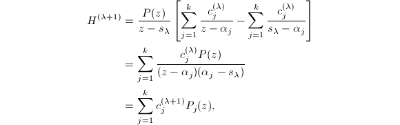 因此有
Jenkin和Traub给出如下算法描述：
步骤1:No-shift process
![$$H^{(\lambda+1)}(z)=\frac{1}{z}\left[H^{(\lambda)}(z)-\frac{H^{(\lambda)}(0)}{P(0)}P(z)\right]\quad(\lambda=0,1,\ldots,M-1).$$](latex/latex2png-FindRoot_161816564_.gif)
步骤2:Fixed-shift process
取正数 满足
满足 ,随机选取复数
,随机选取复数 满足,且
满足,且 ,这里取为离所选最近的根.再做如下迭代：
,这里取为离所选最近的根.再做如下迭代：
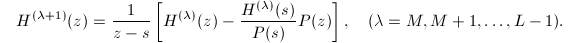
步骤3:Variable-shift process
设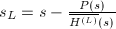,再做如下迭代：
我们得到,全局收敛.
 使得即可证明收敛性.
使得即可证明收敛性.
而
![\begin{align*}
\frac{s_{\lambda+1}-\alpha_1}{s_{\lambda}-\alpha_1}=&\frac{s_{\lambda}-\frac{P(s_{\lambda})}{\overline{H^{(\lambda+1)}}(s_{\lambda})}-\alpha_1}{s_{\lambda}-\alpha_1}\\
&=1-\frac{P(s_{\lambda})}{\overline{H^{(\lambda+1)}}(s_{\lambda})(s_{\lambda}-\alpha_1)}\\
&=1-\frac{P(s_{\lambda})\sum_{1\le j\le k}c_j^{(\lambda)}/(\alpha_j-s_{\lambda})}{P(s_{\lambda})\sum_{1\le j\le k}\frac{c_j^{(\lambda)}}{(\alpha_j-s_{\lambda})(s_{\lambda}-\alpha_j)}(s_{\lambda}-\alpha_1)}\\
&=1-\frac{\sum_{1\le j\le k}c_j^{(\lambda)}(s_{\lambda}-\alpha_1)/(s_{\lambda}-\alpha_j)}{\sum_{1\le j\le k}c_j^{(\lambda)}(s_{\lambda}-\alpha_1)^2/(s_{\lambda}-\alpha_j)^2}\\
&=1-\frac{1+\sum_{2\le j\le k}d_j^{(\lambda)}r_j^{(\lambda)}}{1+\sum_{2\le j\le k}d_j^{(\lambda)}[r_j^{(\lambda)}]^2}\\
&=\frac{\sum_{2\le j\le k}[r_j^{(\lambda)}]^2d_j^{(\lambda)}-\sum_{2\le j\le k}r_j^{(\lambda)}d_j^{(\lambda)}}{1+\sum_{2\le j\le k}[r_j^{(\lambda)}]^2d_j^{(\lambda)}},
\end{align*}](latex/latex2png-FindRoot_211841371_.gif) 由于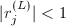,则
令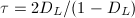,即得.
由于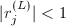,则
令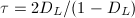,即得.
假设,则对,有 R/2,$$" class="latex-display" width="580" height="19"> 即仍有 ,又由于 则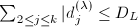,于是,我们归纳证明了.
,又由于 则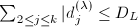,于是,我们归纳证明了.
为了说明迭代的合理性,我们仍要证明,因为 我们假定,且又由知0$" class="latex-inline" style="vertical-align: -5px" width="119" height="22">. □
有了上面的定理,下面证明收敛性:
于是
固定 后,取充分大,可使上式足够小,故我们可以取到使得.
后,取充分大,可使上式足够小,故我们可以取到使得.
我们再取足够大使足够小使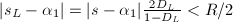,则前述定理条件均满足,由是,. □
收敛速度和一些细节说明
下面给出对收敛速度的估计,
由于,则,又R/2$" class="latex-inline" style="vertical-align: -5px" width="133" height="18">,则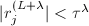.于是
则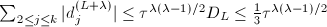.
且由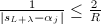,代入前面表达式可得
证毕. □
由此可以看到,Jenkins-Traub算法是至少二阶收敛的,它比普通的牛顿迭代法要快.
对于算法细节的说明：
于是 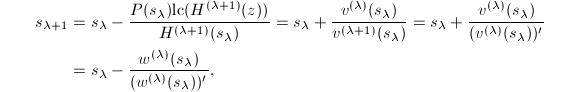 证毕. □
一种Cauchy零点模估计
我们再对多项式零点模的大小做一估计(由Cauchy给出),首先有下面的引理:
 上单增,且
上单增,且 故有唯一正实根,从而也是的唯一正根,且由单调性可知0\wedge P(r)>0\}=(r_0,+\infty)$" class="latex-inline" style="vertical-align: -5px" width="235" height="18">.
□
故有唯一正实根,从而也是的唯一正根,且由单调性可知0\wedge P(r)>0\}=(r_0,+\infty)$" class="latex-inline" style="vertical-align: -5px" width="235" height="18">.
□
由 和
和 的定义知道,分别是方程和的根,则根据上面的证明我们有,亦即.
□
的定义知道,分别是方程和的根,则根据上面的证明我们有,亦即.
□
Laguerre 算法
该方法也是一种比牛顿迭代快的算法(见[2]2.9节),用到了多项式的二阶导数.考虑复多项式,其有 个根,定义如下一些多项式:
对于某个固定的
个根,定义如下一些多项式:
对于某个固定的 ,记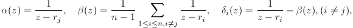
,记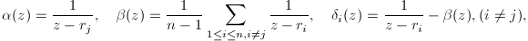
于是,若定义,则还有
若消去,可得到关于 的二次方程: 解之得
的二次方程: 解之得
由的定义我们可以得到 但若我们令,注意到当 接近零点
接近零点 时,在
时,在 ,表达式中各项只有含的一项占主导地位,是奇异部分,因此迭代过程中这样的假设是合理的.于是我们得到逼近的序列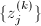的迭代式,即Laguerre迭代公式：
,表达式中各项只有含的一项占主导地位,是奇异部分,因此迭代过程中这样的假设是合理的.于是我们得到逼近的序列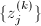的迭代式,即Laguerre迭代公式：
该迭代算法对于单根是三阶收敛,对于多重根是一阶线性收敛.下面的改进算法给出单根时的四阶收敛： 其中
实一元多项式求实根算法
Sturm序列
Sturm序列可用来在实轴上隔离实一元多项式的根,这一节我们先介绍这方面的理论.首先定义(可参见[3]P170):
 无平方,称为广义Sturm序列,如果它们满足
无平方,称为广义Sturm序列,如果它们满足
- ,
- 在上是常量,
- 若,则
- 对于,若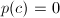,则在
 的邻域内与符号相同.
的邻域内与符号相同.
此时对于,定义为序列的变号次数,即 对于可同样定义.
广义Sturm序列有如下性质:
 为
为(1)设且,则由定义中第4条知0$" class="latex-inline" style="vertical-align: -1px" width="46" height="13">使得时,,此区间内变一次号,当时0$" class="latex-inline" style="vertical-align: -5px" width="100" height="18">,此区间内不变号,此时若将限定在从到的变号,则有会减小1.
(2)设且对某个,,则由定义中第3条知时,,此时若将限定在从到的变号上时,函数在小区间上不变. □
需要郑重说明的一点是,从上面定理的证明过程来看,实际上我们不仅要求在 两点上不为零,还要求诸
两点上不为零,还要求诸 在此两点也不为零.因为根据我们对于变号的定义,序列
的变号数为
在此两点也不为零.因为根据我们对于变号的定义,序列
的变号数为 ,对于连续函数情形我们可以对
,对于连续函数情形我们可以对 进行微小移动使得序列成为
则变号数变为
进行微小移动使得序列成为
则变号数变为 .于是对于序列中各个多项式,需要满足.
.于是对于序列中各个多项式,需要满足.
如何找到一个这样的广义Sturm序列呢？下面的定义给出了一个具体的实例.
 直至为一常数多项式.
直至为一常数多项式.
第二个条件由也可得到.
第三个条件:对于,首先.倘若其中有一个是零,不妨设,则有重因子,矛盾.再由知.
第四个条件:对于,由于其无平方,,由导数的定义知则在的某个去心邻域内有与同号.
□
由上面的定理可以得到如下推论:
我们对这里变号数的重新定义做一些说明.前文我们已经说过,对于各个也需要它们在两点不为零.事实上,假若在 点值为零,则在的足够小的邻域内是可以得到正确变号数的.其实若根据广义Sturm序列满足的第3个条件可知,此时必有,此处应取为.显然我们可以得到重新定义的的表达式.
点值为零,则在的足够小的邻域内是可以得到正确变号数的.其实若根据广义Sturm序列满足的第3个条件可知,此时必有,此处应取为.显然我们可以得到重新定义的的表达式.
实根隔离算法
区间隔离算法本质上是一种分治法的思想.我们利用Sturm序列不断将根的隔离,最终将每个根都隔离开(见[4]).
输入:无平方因子多项式,区间,且,
输出:上所有根的隔离区间的集合 .
.
- ,
- 任取区间,令,若,则,转6步,若则直接转第6步,
- 此时必有1$" class="latex-inline" style="vertical-align: -5px" width="118" height="18">,令,,
- 若,考虑,,若则,否则,对于和同样操作,转6步,
- 否则有,,作代换,并令,则,求其根的绝对值的下界,则对于有.若则,否则.同样利用来决定将放在或
 中,
中, - 若则输出,否则转2步.
接下来我们可以用二分法缩小区间,或用Newton迭代法求根的数值解.
代数模方程求解
这一小节我们讨论有限域中的代数方程求解,关于此问题,可以参考[5]1.5节.对于一次模方程,我们可以很简单地直接解出,下面我们先介绍一下有限域中的开平方算法,这些与数论中的二次剩余理论均有联系.
 中的开平方算法
中的开平方算法
先看一些比较殊的情况.我们考虑问题,其中是模的二次剩余,其Jacobi符号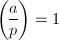.此时必有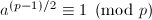.
若素数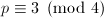,则令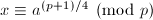即可.
若素数,此时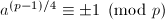,若取正号,则命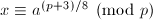,否则由有,于是命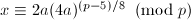.
对于一般情况,我们可以尝试有限域上的因子分解算法.Schoof提出了一种非概率性的方法,并且是多项式时间的算法,因为它要利用椭圆曲线,过程过于复杂,所以我们介绍另一种概率性的Tonelli Shanks算法.
首先我们可以将 中的2的幂次分离出来,即,
中的2的幂次分离出来,即, 是奇数,
是奇数, 是自然数使得.因为乘法群与加群,则其2-Sylow子群
是自然数使得.因为乘法群与加群,则其2-Sylow子群 是一个阶的循环群,设是的生成元,则中平方数的阶整除且是的偶数次幂.
是一个阶的循环群,设是的生成元,则中平方数的阶整除且是的偶数次幂.
当是模中的二次剩余时,我们有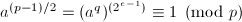,于是是中的平方数,故存在偶数使得.此时若令
则有.
下面给出求平方根的算法:
,,以及使得,是奇数,
输出:使得,或者不存在.
- 随机任取使得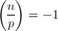,令,
- 令,,
 ,,,
,,, - 若
 ,则输出并终止,否则找到最小的使得,若,则输出非二次剩余并终止,
,则输出并终止,否则找到最小的使得,若,则输出非二次剩余并终止, - 令,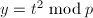,,,,并转3步.
 是困难的,因此Shanks提出了上面的算法.注意到在算法开始时我们有下面的等式成立:
记是群中阶整除的元素组成的子群,则
是困难的,因此Shanks提出了上面的算法.注意到在算法开始时我们有下面的等式成立:
记是群中阶整除的元素组成的子群,则 是的生成元且,因此
是的生成元且,因此 是群中的二次剩余.
是群中的二次剩余.
显然每次循环之后,都会严格地减小.设某次循环前各量用下标0表示,循环后各量用下标1表示,则,,,于是
即由数学归纳法可证每次循环后上面三个等式均成立.当时,我们有 ,于是算法是可终止的.
,于是算法是可终止的.
 ,则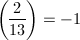,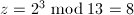.
,则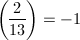,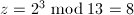.
首先,,,,.
因为,且使 的最小的
的最小的 为,故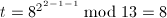,
为,故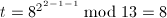, ,
, ,,.故此时输出.
,,.故此时输出.
模代数方程求解
[5]中提供了求解模下代数方程的方法.实际上在域中解多项式方程时,可以看作是求多项式的因子分解问题.而在有限域上,因子分解算法本身是简单的（见有限域上因子分解有关章节,事实上当时也已提出了一个 代数方程求根算法）,因此我们期望用因子分解的算法来求根.事实上我们将看到[5]中提供的求根算法就是有限域因子分解算法.
代数方程求根算法）,因此我们期望用因子分解的算法来求根.事实上我们将看到[5]中提供的求根算法就是有限域因子分解算法.
下面我们给出算法,再对算法中的每一步进行分析.
代数方程求根算法)
输入:素数,![$f\in\field{p}[x]$](latex/latex2png-FindRoot_220645909_-5.gif) ,
,
输出:中 的根.
的根.
- 求,若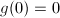,输出并令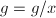,
- 若
 ,则结束,若,即,则输出并终止,若,,则令,计算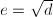,输出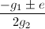并终止,
,则结束,若,即,则输出并终止,若,,则令,计算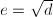,输出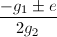并终止, - 随机取,,若或,则重做此步,
- 递归调用本算法输出和的根,注意调用时不必再执行第1步.
中一次不可约因子的乘积提取出来,只考虑在中的根,并且将0根做了预处理,从而从 中排除掉.
中排除掉.
第2步是进行一些平凡的处理,即对于一次和二次的直接由代数运算或求根公式求得其根.
第3步实际上是同次因子分解算法.只不过这里随机取的多项式是 ,[5]中的解释是一次因子的幂次计算起来要容易一些.
,[5]中的解释是一次因子的幂次计算起来要容易一些.
分圆多项式(Cyclotomic polynomial)
本章之前所介绍的各种一元多项式求根算法均是数值算法(有限域上求根除外),而下面要介绍的分圆多项式,对于多项式根的精确求解是有帮助的.
分圆多项式的定义及生成
很容易看出,的次数为,为Euler函数.分圆多项式与次单位根有很大的联系,我们同时有下面的引理.
 .
次单位根,其阶为
.
次单位根,其阶为 ,显然,并且.由此可以知道欲证等式两端有相同的根.再由两端均是无平方因子多项式且首一,故等式成立.
□
,显然,并且.由此可以知道欲证等式两端有相同的根.再由两端均是无平方因子多项式且首一,故等式成立.
□
引理的等式可以写为,由Mobius反演变换可得,即
(1)当是素数时,由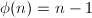即得.
(2)可以验证的阶是当且仅当的阶是.
(3)([7]Exercise 14.45解答)当 时有
时有 (假设是一素数).若的阶是,则的阶是.同样地若的阶是,则的阶也是,因此由二者均无平方因子,次数相同且首一可知等号成立.
(假设是一素数).若的阶是,则的阶是.同样地若的阶是,则的阶也是,因此由二者均无平方因子,次数相同且首一可知等号成立.
(4)由条件可知.若的阶是,可得的阶是.同样由二者均无平方因子,次数相同且首一可知等号成立.
□
引理表明各分圆多项式实际上都是整系数的,并且我们可以构造如下生成分圆多项式的算法([7]):
分圆多项式的检测
如果我们能有效地进行分圆多项式的检测,则对于一些多项式的精确求解是有帮助的.文献[8]提出了两种有效的检测方法,并给出了有位移的分圆多项式(Shifted cyclotomic polynomial)的检测方法.下面介绍其中一个算法:Graeffe方法.下一节将介绍另一算法:Inverse 方法.
 ,
,设 ,则.
,则.
设,则我们有或,无论哪种情形,均有或.
由证明过程还可以看出,这两者之间是一一对应的. □
![$f\in\mathbb{Z}[x]$](latex/latex2png-FindRoot_15161698_-5.gif) ,
,
输出:是否是分圆多项式.
设,则:
- 若,则是分圆多项式.
- 若,且是分圆多项式,则是分圆多项式.
- 若,其中是分圆多项式,则是分圆多项式.
- 对于其它情况,均不是分圆多项式.
(1)任取的一个根,由可知均是的根,故必存在使得.再由的不可约性可知是以为一本原单位根生成的分圆多项式.
(2)若是奇数,则,否则,无论哪种情况均可由是分圆多项式得到是分圆多项式.
(3)此时的根是一个分圆多项式根的平方根,且不可约,因此也是分圆多项式.
(4)反过来我们设是一个分圆多项式,设,若是奇数,则将2乘到的简化剩余系上仍然是一个简化剩余系,即的根的平方均列出了的根,因此.若,是奇数,则的根是次的本原单位根,故其相反数是次本原单位根.若,由于的根均是次本原单位根,但是,每个根均出现2次,因而是一分圆多项式的平方.
□
,第二步中的和第3步中的.
下面我们举例说明算法.
 ,则
故是分圆多项式.事实上.
是分圆多项式.事实上.
,则
故是分圆多项式.事实上.
是分圆多项式.事实上.
Euler反函数(Inverse )方法
细心的读者可能已经注意到只用上节所说的方法虽然能够检测出多项式是否为分圆多项式,但不能判断其阶数.如果是为了精确求解方程,那么我们仍需知道其阶数.本节将要介绍的方法可以解决这一问题.
Euler反函数方法本质上是简单的.假设是一次不可约多项式,倘若其为阶分圆多项式,那么我们有,且.因此一个比较朴素的想法就是列举可能的,再进行试除.为了列举所有可能的值,我们给出对函数的一个估计:
除了利用试除法检测,我们还可以通过提升多项式根的幂次来检测.即对于阶的分圆多项式,其根经过次幂后,必为.由上一小节的Graeffe过程我们可以知道,Graeffe多项式
的所有根恰为的根的平方.事实上通过下面的定理,我们可以利用结式来计算阶Graeffe多项式
使得其所有的根恰为的根的次幂.
如果不用试除法,则通过计算阶Graeffe多项式可以知道
于是也可得到.
位移分圆多项式(Shifted cyclotomic polynomials)检测
设是一个分圆多项式,为一整数,则我们如何才能检测出如的形式呢?
首先我们注意到分圆多项式的常数项均为,因此对于给定的任何一个整系数多项式,若要找到使是分圆多项式,则必有.因此我们要解一个方程的整数根.而求一整系数方程的整数根时,我们可以用有限域因子分解算法一章中提到的算法,也可以取 的常系数的所有整数因子来尝试其是不是该方程的根.
的常系数的所有整数因子来尝试其是不是该方程的根.
下面给出一个具体的例子来说明这一方法.
 ,
, ,
, ,其中将代入可得
正是分圆多项式.
,其中将代入可得
正是分圆多项式.
(一元)复合函数分解(Functional Decomposition)
Functional Decomposition算法
这一小节我们来处理一些复合函数分解的问题.函数复合我们已经很了解了,即对于两个多项式 ,我们可以求出它们的复合函数.现在我们要考虑的是它的逆问题,即对于给定的,能不能找到这样的和
,我们可以求出它们的复合函数.现在我们要考虑的是它的逆问题,即对于给定的,能不能找到这样的和 ,以及如何找到他们.
,以及如何找到他们.
为什么要考虑这个问题呢?我们知道,对于代数方程精确求解来说,我们已知能精确求解的有低于4次的多项式以及前面所述的分圆多项式,事实上,某些高于4次的多项式,如也可以看作2次方程来精确求解,这里就要用到复合函数分解的算法,即,其中,.
对于本算法所依赖的有关形式幂级数的算术,在本节后面几小节将会提到.
本节内容可参考[9].
我们来考虑一元情形.即对于一元次多项式,对于的一个因子 ,令,我们要找到多项式使得它们的次数分别为且.我们这里考虑所谓非"病态"的情形("tame" case, 见[9]),即域的特征不整除.
,令,我们要找到多项式使得它们的次数分别为且.我们这里考虑所谓非"病态"的情形("tame" case, 见[9]),即域的特征不整除.
我们有下面的关于复合函数分解的唯一性定理:
,,,
- .
- .
- ,其中是
 阶切比雪夫多项式(th Chebyshev polynomial).
阶切比雪夫多项式(th Chebyshev polynomial).
考虑到分解在上述变换下的不定性,下面我们设,且, ,于是我们有
这相当于将一个首一多项式分解为两个首一多项式的复合,并且第二个多项式()常数项为0.考虑下面给出的定义:
,于是我们有
这相当于将一个首一多项式分解为两个首一多项式的复合,并且第二个多项式()常数项为0.考虑下面给出的定义:
下面在提出分解算法之前,为了方便先给出一个定义:
 ,并且,
,并且,
由知,由知.反过来设,并且满足相应条件,则和的最高项相同,即.仍记,于是,且
证毕. □
 ,其中
,其中 是两个次数为的多项式相乘所需的代数运算.Taylor展开只需由Euclid除法一步步计算即可.算法中要用到的多项式开方算法等一些需要补充的问题将在后面介绍.该算法的唯一性是由于开方得到的常数项为1的次根唯一.
是两个次数为的多项式相乘所需的代数运算.Taylor展开只需由Euclid除法一步步计算即可.算法中要用到的多项式开方算法等一些需要补充的问题将在后面介绍.该算法的唯一性是由于开方得到的常数项为1的次根唯一.
进而我们有下面的推论:
利用复合分解算法,我们可以进行一元多项式的完全复合分解.
输入:首一次多项式,且,
输出:的完全复合函数分解.
- 计算整数的因子分解,令为的正因子个数,且记为其正因子,
- 对从
 循环到,求解问题,对于寻找到的第一个解
循环到,求解问题,对于寻找到的第一个解 ,递归调用本算法求解的分解问题,得到分解,
,递归调用本算法求解的分解问题,得到分解, - 输出.
形式幂级数的一些基本操作
[10]中形式幂级数的一些基本的算术作了介绍.
 在域中.
在域中.
我们可以考虑有限域或复数域上的形式幂级数,这里我们假定都是在上讨论.虽然一般计算机上是无法表达无穷项的形式幂级数,好似浮点数都是有限精度的,但我们仍有讨论它们的必要.一般而言,我们也只考虑形式幂级数的前若干项.这样,问题就化为了在模下的多项式算术问题.
首先,很明显我们可以得到形式幂级数的乘法算法:
 .
.由上面算法,我们可以很方便地得到除法算法:
下面考虑求幂算法,此算法和前文复合函数分解中所依赖的开方算法息息相关.考虑一个幂级数,对于某个实数,欲求级数,首先我们可设有如下形式:
则其次幂为:
由上式可以看出问题归结为一个常数项为的形式幂级数的幂次计算,下面给出两种方法.设,其中,首先我们利用二项式定理展开可得:
另一种方法是由Euler所发现,由,我们求其微分可以得到: 亦即 若将其系数展开,并取项的系数可得等式: 于是
从上式可以看出,Euler给出的算法是 级的,一般地,我们采用上面的二项式展开算法或Euler给出的方法即可,但若要追求效率,[9]中提到该算法效率可达,其中是考虑的项式,是开方次数(情形),此由文献[11]给出的Newton迭代等算法可以达到.关于形式幂级数操作的快速算法可以参考该文,另外对于形式幂级数的求倒也可参考[12]等文献,这里就不再赘述了.
级的,一般地,我们采用上面的二项式展开算法或Euler给出的方法即可,但若要追求效率,[9]中提到该算法效率可达,其中是考虑的项式,是开方次数(情形),此由文献[11]给出的Newton迭代等算法可以达到.关于形式幂级数操作的快速算法可以参考该文,另外对于形式幂级数的求倒也可参考[12]等文献,这里就不再赘述了.
参考文献
[1]A three-stage variable-shift iteration for polynomial zeros in relation to generalized Rayleigh iteration, Numer. Math. 14 (1970), 252-263.
[2]Iterative Methods for Roots of Polynomials, Exeter College, University of Oxford, 2001.
[3]计算机代数, 清华大学出版社, 北京, 2004.
[4]计算机代数基础---代数与符号计算的基本原理, 科学出版社, 2005.
[5]A course in computational algebraic number theory, Springer, Berlin; Heidelberg; New York, 1996.
[6]代数学引论, 高等教育出版社, 北京, 2000.
[7]Modern Computer Algebra, Cambridge University Press, 2002.
[8]Effective tests for cyclotomic polynomials, Symbolic and Algebraic Computation, Lecture Notes in Computer Science, 358 Springer Berlin/ Heidelberg, 1989, 244-251.
[9]Functional decomposition of polynomials: the tame case, Journal of Symbolic Computation 9 (1990), 281-299.
[10]The art of computer programming, volume 2 (3rd ed.): seminumerical algorithms, Addison-Wesley Longman Publishing Co., Inc., Boston, MA, USA, 1997.
[11]Fast algorithms for manipulating formal power series, J. Assoc. Comput. Mach. 25 (1978), no.4, 581-595.
[12]On Computing Reciprocals of Power Series, Numer. Math. 22 (1974), 341-348.